The missing security layerfor Strands agents
AWS ships a red-team tool that tests what your agent says. AgentAudit tests what your agent's tools can actually do together — and how it's deployed on AgentCore — in one signed scorecard, with a diff-ready fix for every finding.
This page is a static, judge-facing build (GitHub Pages can't run Python). The scorecards linked below are real HTML output rendered by the actual renderer against the actual fixtures — not mockups.
One command. Every trust boundary.
Each layer fails independently and answers a different question — deterministic checks run first and are trusted before anything needing a model.
Static Tool Trust Graph
Parses the agent with the stdlib ast — no LLM, no execution — and flags patterns lifted
straight from web-app pentesting, mapped onto agent tools.
- IDOR-in-Agent
- Confused Deputy
- Excessive Agency
- SSRF-via-tool-param
- secret-in-prompt
- Exfiltration capability pair
Harness Integrity
Checks the agent's own code for the one thing it controls against CoreBreak (CVE-2026-18830) — a real, currently-unpatched flaw in the Strands event loop that lets an attacker skip the model entirely.
- Confirms the caller-supplied message history is sanitized before it reaches
Agent(...) - Never overclaims — the finding names the exact upstream function and CVE
Model Red-Team
Static prompt-hygiene checks plus a wrapper around AWS's own
strands_evals.redteam, auto-generating adversarial cases from the agent's real tool list.
- overbroad-authority-in-prompt
- 5 built-in risk categories
- Crescendo / GOAT / PAIR / Sequential-Break strategies
AgentCore / IAM
Read-only boto3 (Get*/List* only) against a real deployed
AgentCore runtime, or offline against a deploy descriptor.
- iam-least-privilege
- guardrails-attached
- memory-encryption-ttl
- runtime-network-mode
- runtime-imdsv2
Architecture
One CLI invocation (or one dashboard scan, local or remote) fans out to the four architectural detector modules plus the behavioral and cloud-posture layers, then unifies every finding through the OWASP ASI 2026 taxonomy before signing and rendering it four ways. Full breakdown: docs/architecture.md (renders natively as an editable Mermaid diagram on GitHub).

Real scorecards, rendered fresh on every deploy
Every page below is generated by agentaudit run's actual HTML renderer against the
actual fixture files, by the same GitHub Actions build that publishes this site.
7 planted flaws across all 4 architectural detectors + behavioral + cloud. Exit 1 — fails CI.
Open the full scorecard →Same agent family, every flaw fixed. Zero findings, exit 0 — proves the tool can pass, not just always fail.
Open the full scorecard →Live CVE-2026-18830 (CoreBreak) demo — unsanitized caller message history reaching the event loop.
Open the full scorecard →Every finding tagged against OWASP ASI 2026
The scorecard, the SARIF export, and the CLI all carry an ASIxx tag from the
OWASP Top 10 for Agentic Applications (2026) —
a single source-of-truth mapping, with two findings honestly left unmapped rather than forced.
OWASP-ASI-2026 toolComponent with 10 taxa and relevant relationships — not a free-text label. Validates against the official SARIF 2.1.0 schema.Verified against public repos we didn't write
Every finding below was hand-verified by reading the real source at the flagged line — file, commit, and line number cited in references/real_world_findings.md.
kyopark2014/strands-agent — unrestricted RCE via exec and bash tools
Two tools run raw conversation input through exec()/subprocess.run(shell=True) with no
sandbox, plus a write→S3→public-URL exfiltration capability pair.
cagataycali/strands-fun-tools — confused deputy in face_recognition
An untrusted collection_id reaches rekognition.delete_faces(...) behind only a
presence check, no ownership/authorization.
strands-agents/agent-builder (official) & eraykeskinmac/strands-hubspot
Zero findings on both — evidence the detectors don't over-fire on well-maintained, genuinely read-only code.
AgentCore-native, not framework-generic
Generic scanners don't understand AgentCore's own configuration surface. Every AWS call
AgentAudit makes itself is read-only (Get*/List* — never mutating).
Test it yourself — three commands, no AWS account needed
The static detectors (the decisive gate) need nothing but Python. AWS credentials are only used for the optional live cloud-posture checks.
# 1. clone & install git clone https://github.com/TOUMO45/AgentAudit.git && cd AgentAudit python -m venv .venv && . .venv/Scripts/activate # Windows: .venv\Scripts\Activate.ps1 pip install -r requirements.txt && pip install -e . # 2. the before/after that tells the whole story agentaudit run --agent fixtures/vulnerable_agent.py # GRADE F, exits 1 agentaudit run --agent fixtures/hardened_agent.py # GRADE A, exits 0 # 3. the live dashboard — try "scan a public GitHub repo" yourself agentaudit dashboard # opens http://127.0.0.1:8770 — paste any public Strands repo URL
python -m agentaudit <cmd> from the repo root — no venv, no PATH setup.pytest (__TEST_HINT__) and ./guard.sh check (→ INTEGRITY OK) — the fixtures and detector code are hash-frozen.out/scorecard.html, out/report.sarif, out/report.signed.json, out/aibom.json — all four from one run.strands-agents/agent-builder (or any owner/repo) into "or scan a public GitHub repo" — it shallow-clones and statically scans it in front of you, read-only.